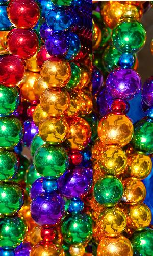
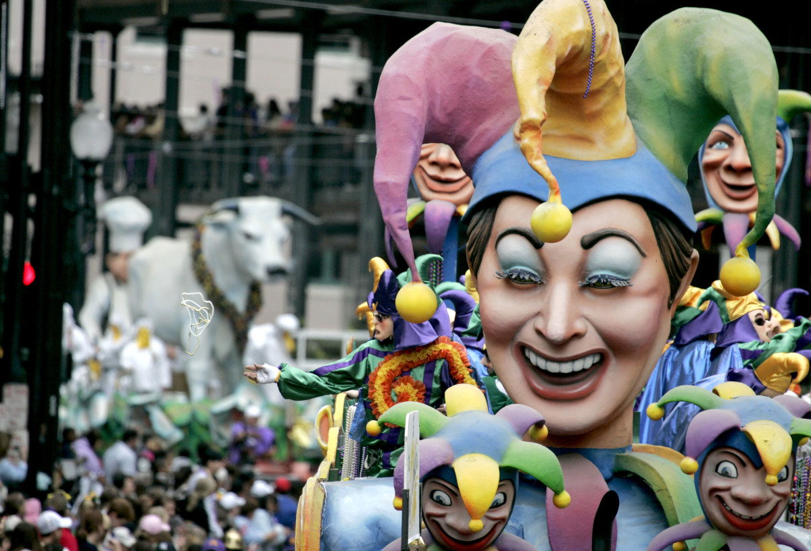

Mardi Gras is so much more special when you understand what you’re celebrating and what each tradition means to the generations of parade-goers who have stood on parade routes before you. There is a story and a purpose behind everything you’ll experience during Carnival Time – from the king cake you’ll eat to the flambeaux who light the parades at night.
Krewes are private, non-profit organizations whose members get together year-round to plan their parade's theme, costumes and throws, according to Mardi Gras New Orleans. They are individually funded by members through dues, sales of krewe-related merchandise and fundraising, including corporate sponsorships. The city of New Orleans is not involved in coordinating Mardi Gras parades; its only involvement is to issue parade permits.
While most people think of parades when they think of Mardi Gras, there are plenty of other traditions too. The King and Queen of each krewe work all year long for the big, spectacular ball. Their identity is a closely guarded secret and part of the mystique until the night of the Ball.Most of the balls are a formal and private affair for the krewe. Debutantes are introduced at the Ball Tableau as a formal introduction to society.
The first Mardi Gras took place on March 3, 1699, when French explorers Pierre Le Moyne d’Iberville and Sieur de Bienville landed near present-day New Orleans, Louisiana. They held a small celebration and dubbed their landing spot Point du Mardi Gras..
In the decades that followed, New Orleans and other French settlements began marking the holiday with street parties, masked balls and lavish dinners. When the Spanish took control of New Orleans, however, they abolished these rowdy rituals, and the bans remained in force until Louisiana became a U.S. state in 1812.
On Mardi Gras in 1827, a group of students donned colorful costumes and danced through the streets of New Orleans, emulating the revelry they’d observed while visiting Paris. Ten years later, the first recorded New Orleans Mardi Gras parade took place, a tradition that continues to this day.
In 1857, a secret society of New Orleans businessmen called the Mistick Krewe of Comus organized a torch-lit Mardi Gras procession with marching bands and rolling floats, setting the tone for future public celebrations in the city.
A 'throw' is the collective term used for the objects that are thrown from floats to parade-goers. Until the 1960s, the most common form was multi-colored strings of glass beads made in Czechoslovakia..
In the 1990s, many people lost interest in small, cheap beads, often leaving them where they landed on the ground. Larger, more elaborate metallic beads and strands with figures of animals, people, or other objects have become the sought-after throws.
In addition to the toxicity of tons of plastic, eye injuries from Mardi Gras parade throws are commonplace, and more severe injuries—such as a fractured skull in an infant struck by a coconut—have also been known to occur.
Mardi Gras is a tradition that dates back thousands of years to pagan celebrations of spring and fertility, including the raucous Roman festivals of Saturnalia and Lupercalia.
When Christianity arrived in Rome, religious leaders decided to incorporate these popular local traditions into the new faith, an easier task than abolishing them altogether. As a result, the excess and debauchery of the Mardi Gras season became a prelude to Lent, the 40 days of fasting and penance between Ash Wednesday and Easter Sunday.
Along with Christianity, Mardi Gras spread from Rome to other European countries, including France, Germany, Spain and England.
Wearing less clothing than considered decent in other contexts during Mardi Gras has been documented since 1889, when the Times-Democrat decried the "degree of immodesty exhibited by nearly all female masqueraders seen on the streets." Risqué costumes, including body painting, is fairly common. The practice of exposing female breasts in exchange for Mardi Gras beads, however, was mostly limited to tourists in the upper Bourbon Street area. In the crowded streets of the French Quarter, generally avoided by locals on Mardi Gras Day, flashers on balconies cause crowds to form on the streets.
In the last decades of the 20th century, the rise in producing commercial videotapes catering to voyeurs helped encourage a tradition of women baring their breasts in exchange for beads and trinkets. Social scientists studying "ritual disrobement" found, at Mardi Gras 1991, 1,200 instances of body-baring in exchange for beads or other favors.
Mardi is the French word for Tuesday, and gras means “fat.” In France, the day before Ash Wednesday came to be known as Mardi Gras, or “Fat Tuesday.”
Traditionally, in the days leading up to Lent, merrymakers would binge on all the rich, fatty foods—meat, eggs, milk, lard and cheese—that remained in their homes, in anticipation of several weeks of eating only fish and different types of fasting.
The word carnival, another common name for the pre-Lenten festivities, also derives from this feasting tradition: in Medieval Latin, carnelevarium means to take away or remove meat, from the Latin carnem for meat.
The colors traditionally associated with Mardi Gras in New Orleans are green, gold, and purple. The colors were first specified in proclamations by the Rex organization during the lead-up to their inaugural parade in 1872, suggesting that balconies be draped in banners of these colors. It is unknown why these specific colors were chosen; some accounts suggest that they were initially selected solely on their aesthetic appeal, as opposed to any true symbolism.
rrol Laborde, author of Marched the Day God: A History of the Rex Organization, presented a theory that the colors were based on heraldry: all three colors correspond to a heraldic tincture, and Rex's goal may have been to create a tricolor to represent their "kingdom". Purple was widely associated with royalty, while white was already heavily used on other national flags, and was thus avoided. Furthermore, he noted that a flag in green, gold and purple in that order complies with the rule of tincture, which states that metals (gold or silver) can only be placed on or next to other colors, and that colors cannot be placed on or next to other colors.
Following a color-themed Rex parade in 1892 that featured purple, green, and gold-colored floats themed around the concepts, the Rex organization retroactively declared that the three colors symbolized justice, power, and faith. The traditional colors are commonly addressed as purple, green, and gold, in that order—even though this order violates the rule of tincture.